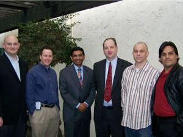
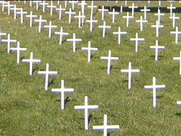

Review Celebrates 20th Anniversary
Nearly fifty alumni, donors, guests, and current staff members celebrated The Stanford Review’s 20th anniversary as Stanford’s conservative paper with a two-day reunion in Palo Alto and San Francisco. Notable speakers included David Friedman, son of the late economist Milton Friedman, and conservative author Dinesh D’Souza.
A Country That Drafts Women to Defend Itself
As a former soldier, I believe that life as a drafted soldier is one of the harshest experiences known to man. During training, you march three dozen miles in the hot sun every week. You polish your boots until you can see your facial reflection. You squeeze with forty of your army buddies in an overcrowded truck that is designed to seat twenty. You are expected to finish your entire meal—including the hot, boiling soup—within ten minutes. You shoot practice rounds at the target, and your sergeant yells the F-word at you whenever you miss. You miss your loved ones: you have not seen them ever since the day of their tearful goodbyes. Your bedtime is midnight and you rise at 4 a.m. Worst of all, you have six hundred and ten more days to serve, and deep inside, you have the sinking feeling that everyday is going to be similar to this one.
Dr. APJ Abdul Kalam’s E-ministration
Dr. APJ Abdul Kalam, India’s 11th president and a man well-known in the Asian subcontinent for his scientific mind, has started to apply new technology to the democratic process. For several months, Kalam has featured a “Children’s Corner” on his official website where he painstakingly responds to hundreds of questions sent in via email every day. The answers, which he guarantees within 48 hours, are not all necessarily revelations and rarely do they offer even wholly unique insight, but the international community is starting to take notice of the President’s humble efforts.

Pro-Life Display Sparks Dialogue
The pro-life demonstration in White Plaza on Jan. 22nd remembering the 34th anniversary of the Roe v. Wade decision sparked little conflict or opposition, reflecting what some students called a surprising tolerance among campus pro-life and pro-choice groups.
Cartoon: Reflection on the Valerie Plame Affair
Guest Cartoonist George Capps draws a sequel to his previous cartoon on the Valerie Plame Affair.
My Lunch with Dinesh D’Souza
This year, the Review turned twenty years old. After twenty years of fighting the administration and the left on campus while facing intense adversity, all of us at The Review felt that this milestone deserved recognition. As such, with the help of our alumni, I organized our 20th Anniversary Alumni Reunion which took place on the 27th-28th of January. The affair was an extraordinary experience. Between the insightful speakers and fascinating alumni, I had never been so captivated by a group of people before. Whether it was listening to David Friedman (son of the late Milton Friedman) discuss the applications of market failure to bettering economic decisions, or finally getting the chance to meet Bob Dolbow, famed Review Business Manager and Zapata distributor (see the last issue to hear about his exploits), I was having a fantastic time.
|
Smoke Signals: Commencement Speaker Edition
We recently heard that the Class of 2007’s commencement speaker would be Dana Gioia, the corporate executive turned poet chairman of the National Endowment for the Arts. We will not on these pages critically evaluate his selection – there will be plenty of time for that on these and other pages in the coming months.
Editor’s Note: Au Revoir
192 pages. 22 issues. 2 volumes. Over my past year as Editor-in-Chief, I’ve asked a lot from the staff of The Stanford Review. To my great delight, the entire staff surpassed all my expectations and made many of The Review’s recent accomplishments possible—including the obtainment of a new distribution policy, the creation of a new layout, the enhancement of our writing staff base, and the implementation of a weekly publication schedule for an entire quarter.
Shanghai Noon on the Final Frontier
Space, popularly identified as the “final frontier,” seems to have lost its ability to capture the hearts and minds of the American people. Ever since we managed to land a man on the moon, Americans seem to be content with how far we have come. Sure, there is some idle speculation about what the future holds and a natural wonder enters into the minds of many as they gaze toward the stars, but these moments are brief and usually nothing more than passing fancies. NASA, America’s space program, rarely garners much coverage, and when it does, the press is usually the result of a calamity, such as the loss of the Challenger in the late 1980s or the accidental destruction of a satellite we sent to Mars due to a miscalculation regarding feet-to-meters conversions.
Online Exclusive: Letters to the Editor
Daniel Kaganovich and Jeremy England recently wrote a cutting piece about Hillel hosting the OneVoice Movement at Stanford. Shame on them. When I first came to Stanford I walked into a room with lead representatives of Stanford’s most prominent Israeli, Muslim, Jewish, and Palestinian groups. The first thing that struck me was that they didn’t know each others names. I was accompanied by a Palestinian and an Israeli who volunteer with OneVoice in the Middle East and were spending just one week speaking on campuses across California.
Dinesh D’Souza Delivers, Once Again
In the aftermath of the 2005 London bombings, one of the burning questions was why affluent, Western-educated, British-born Muslims would ever want to become suicide bombers. If these men were hardly poor or desperate, why would they ever want to become terrorists? Dinesh D’Souza’s addresses this question in his recent book, The Enemy At Home: The cultural left and its responsibility for 9/11.
|